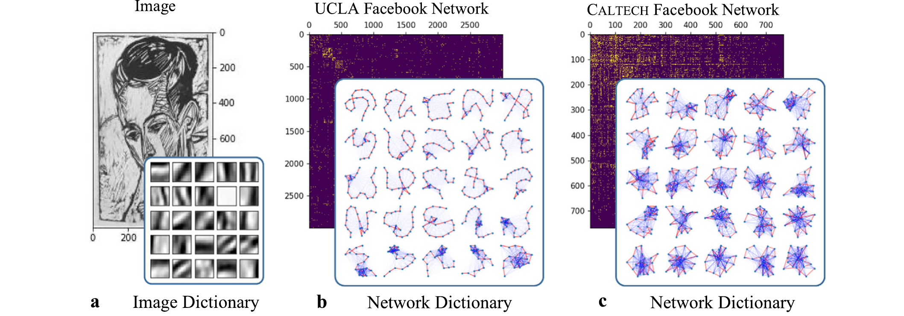
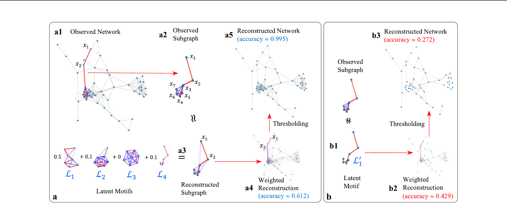
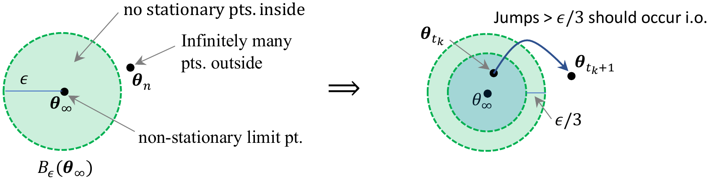
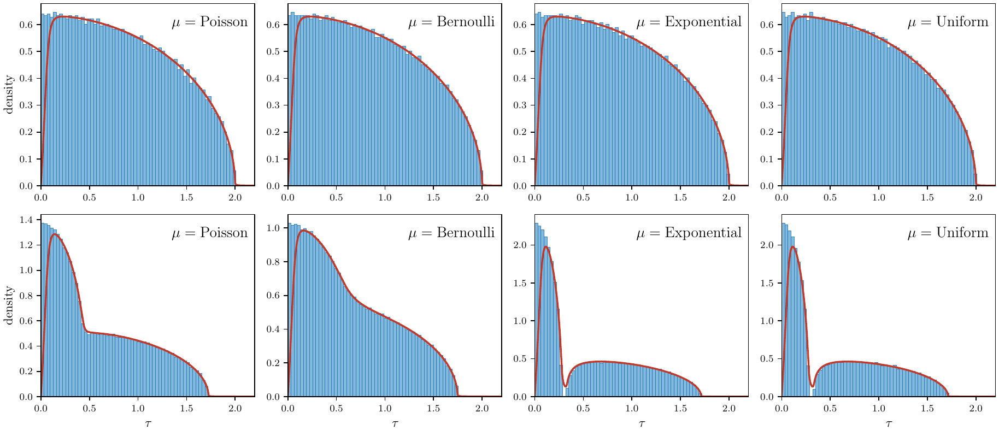
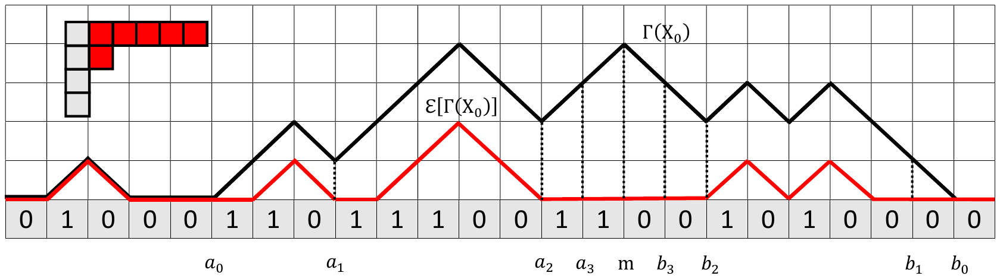
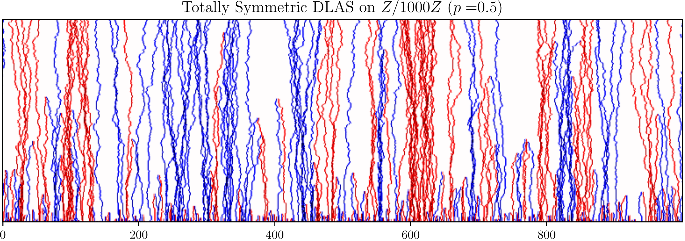

Research
My work studies large discrete systems — networks, random matrices, particle systems, and coupled oscillators — using tools from probability, optimization, and machine learning. A few themes are highlighted below.


Learning the building blocks of networks
Real networks are built from a small number of repeating local patterns. I develop dictionary-learning methods that discover these low-rank mesoscale structures directly from data, so that a large network can be summarized — and compared with others — through a handful of interpretable building blocks. The same idea powers online algorithms that learn from streaming and dependent (Markovian) data.
Nature Communications (2024) · JMLR (2020, 2022, 2023) · PLOS Computational Biology (2024) · Front. Appl. Math. Stat. (2024) · ITA (2020) · NeurIPS OPT Workshop (2020) · and 2 preprints → see publications

Machine learning and optimization
Modern machine learning relies on optimizing nonconvex objectives with structure — blocks, constraints, manifolds, and dependent data. I develop and analyze algorithms such as block majorization-minimization, stochastic MM, and first-order methods under Markovian sampling, proving convergence rates and complexity guarantees, with applications from supervised matrix factorization to reinforcement learning and bilevel optimization.
SIAM J. Optimization (2025) · JMLR (2024, 2026) · ICML (2023 ×2, 2024 ×4, 2025) · NeurIPS (2023, 2025) · RL Conference (2026) · J. Scientific Computing (2024) · Electron. J. Probab. (2026) · and 3 preprints → see publications

Random matrices, contingency tables, and optimal transport
How does a large random matrix behave once we fix its row and column sums? I study the limiting shape and fluctuations of such matrices, which connects the combinatorics of contingency tables to entropic optimal transport and the Sinkhorn algorithm through the lens of the Schrödinger bridge. These results explain when the popular Sinkhorn scaling converges quickly and what its output looks like at scale.
Trans. Amer. Math. Soc. (2020) · Bulletin of the LMS (2022) · Algebraic Statistics (2024) · ICML (2025) · and 2 preprints → see publications

Solitons in box-ball systems
The box-ball system is a simple discrete dynamical system whose randomized versions hide rich probabilistic structure. I study how “solitons” — stable traveling patterns — emerge, how long they get, and how their statistics scale as the system grows, revealing sharp phase transitions and connections to integrable systems.
Forum of Mathematics, Sigma (2024) · IMRN (2022) · J. Stat. Phys. (2019) · Nuclear Physics B (2018) · and 1 preprint → see publications

Cellular automata and interacting particle systems
What happens when many simple particles move, collide, and annihilate or coalesce? I study the long-run behavior of such systems — ballistic annihilation, diffusion-limited annihilating systems, parking processes, and cyclic/excitable cellular automata — identifying phase transitions, particle-density asymptotics, and clustering behavior on lattices and general graphs.
Annals of Probability (2023) · Ann. Appl. Probab. (2018, 2019, 2022) · Electron. J. Probab. (2023, 2025) · Random Structures & Algorithms (2021) · Stochastic Process. Appl. (2019) · J. Stat. Phys. (2018, 2024) → see publications

Coupled oscillators and synchronization
From fireflies to pacemaker cells, simple oscillators that nudge their neighbors can fall into collective rhythm. I study when and how fast pulse-coupled oscillators synchronize on networks, proving guarantees on trees and general graphs, and using machine learning to predict synchronization far beyond what classical theory anticipates.
Physica D (2015) · SIAM J. Applied Dynamical Systems (2018) · Scientific Reports (2022) · J. Cellular Automata (to appear) · and 2 preprints → see publications